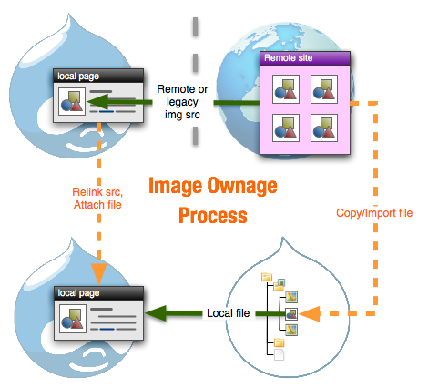
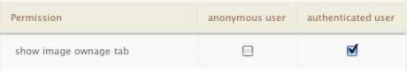
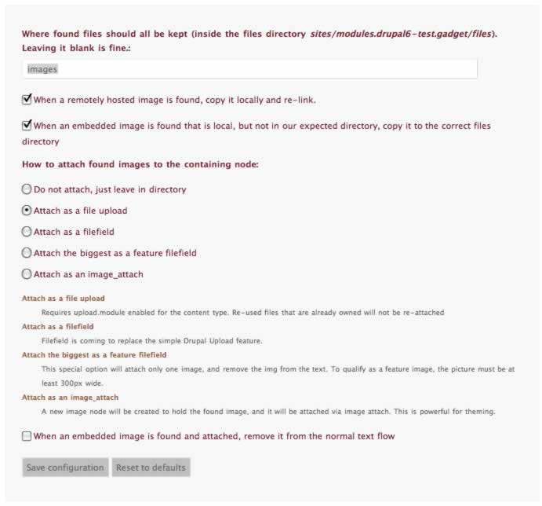
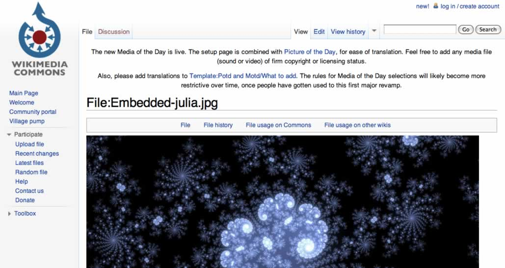
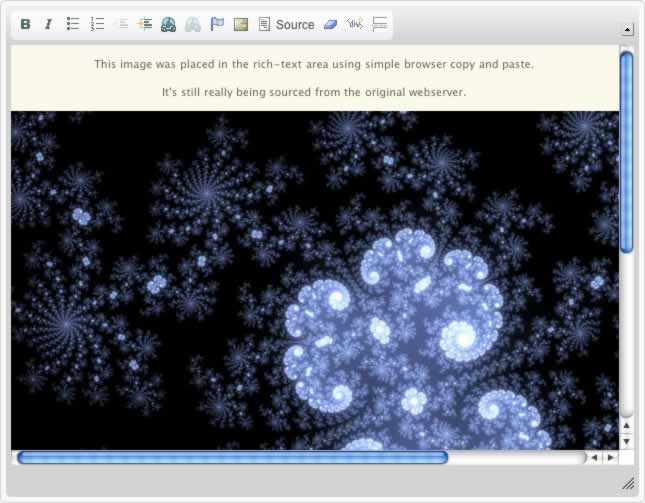

This module is designed to tidy up badly imported images, either pasted in naively by users, inserted using simple WYSIWYG file managers, or as a result of a content migration from another site where images remain linked to URLs outside the Drupal file management system.
The module is meant as an admin or content-manager tool to tidy up unruly pages. Generally it would be used following an import of legacy data, run in bulk, then turned off.
Image Ownage has several independent phases.
File ownage can be accessed through the content management form as "Scan content for embedded images and own them" in the available "update actions", or as a tab action on the node edit form. Access to the the tab is controlled through normal permissions management as "show image ownage tab".
The settings page allows you to choose how you wish the image to be absorbed into the system. Core upload attachments are fine, but CCK filefield is even more powerful.
You should enable upload.module, and set the content types that CAN have images attached to them in the appropriate settings page. Only then will image_ownage be able to take the next step and automate the actual linking of node to image.
Which filefield is used to contain the imported images is configured on the settings page. The filefield attachment method will only work on nodes that have the named filefield field assigned to them through cck/field management.
For many reasons, images may become embedded in HTML using external source links. A simple example is a user copying and pasting from another website,
 When the process is run by pressing the tab, a detailed report of the actions is displayed
If alt or title text is found, this will be absorbed into the description or caption area of the Drupal storage field.
Once processed, the image is properly part of your Drupal site and can be manipulated with imagecache etc.